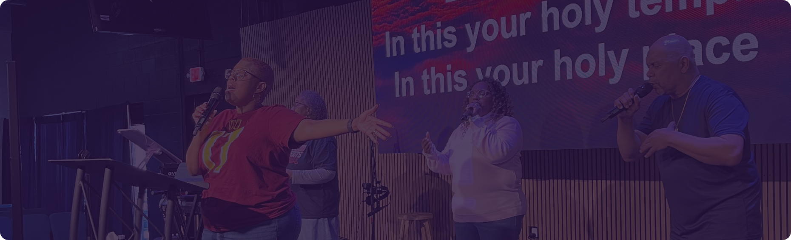

Welcome to New Dimension Worship Center
Equipping God's People, Advancing God's Kingdom. Empowered to Move from Religion to a Life-Transforming Relationship with Christ.
Welcome!
We’re so glad you’re here. At NDWC, our mission is simple yet powerful: to equip, empower, and encourage God’s people for the work of serving and building up the Body of Christ. Together, we are advancing the Kingdom of God— one person, one marriage, and one family at a time.
Our passion is to lead believers beyond religion into a genuine, life-transforming relationship with Jesus Christ. Whether you are new to faith, rediscovering your walk with God, or looking for a church family, you’ll find a welcoming community ready to grow with you.
Join us as we worship, serve, and advance the Kingdom of God—one person, one marriage, and one family at a time.
Join Us This Sunday
Join us as we worship, serve, and advance the Kingdom of God—one person, one marriage, and one family at a time.
In Person
7450 New Technology Way, Suite C,
Frederick, Maryland 21703
Time: 12:00 pm – 2:00 pm
Online
Streaming via Facebook Live
New Dimension Worship Center
Time: 12:00 pm – 2:00 pm

Who We Are
We are a family-centered, encouraging, and loving community of believers committed to helping people experience a life-transforming relationship with Christ. Our mission is rooted in advancing the Kingdom of God through authentic relationship, spirit-led worship, and equipping disciples to serve in every sphere of life.
Upcoming Events
NDWC Men’s Prayer Breakfast
Saturday, June 20th, 2026
7450 New Technology Way, Suite C, Frederick, Maryland 21703